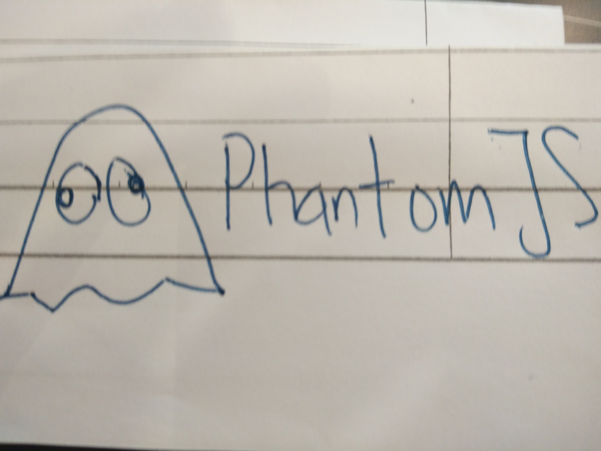
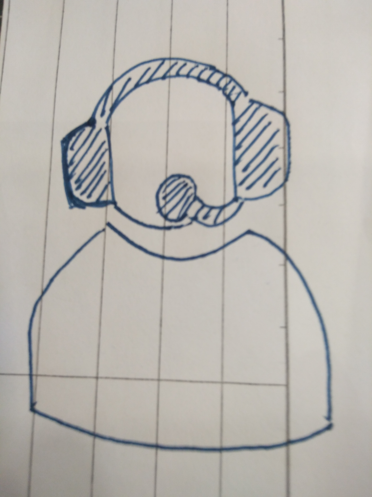

Automated testing is just like the name, it's an automated system run the tests instead and it has available for Javascript. An example of automated testing of HTML and CSS is Phantome CSS, a project use for make developers to create Cucumber-style story file to test the CSS and HTML. Cucumber is a technology to allow us to write test cases as simple. Ghost Story combine Node.js, PhantomJS, CasperJS and Spooky to provide an interface between these test files and Frozen DOM testing.
User agent is acting on behalf of a user, it's for refers to a web browser telling a website information about browser and operating system. After that, an example of user agent is an email reader is a email user agent, user agent is act as a client in a network protocol used in communication within a client server distributed computing system. In HTTP, user agent is used for content negotiation, where the origin server selects suitable content or operating parameter for the response, for example, user agent string may used by web server to choose variants.
